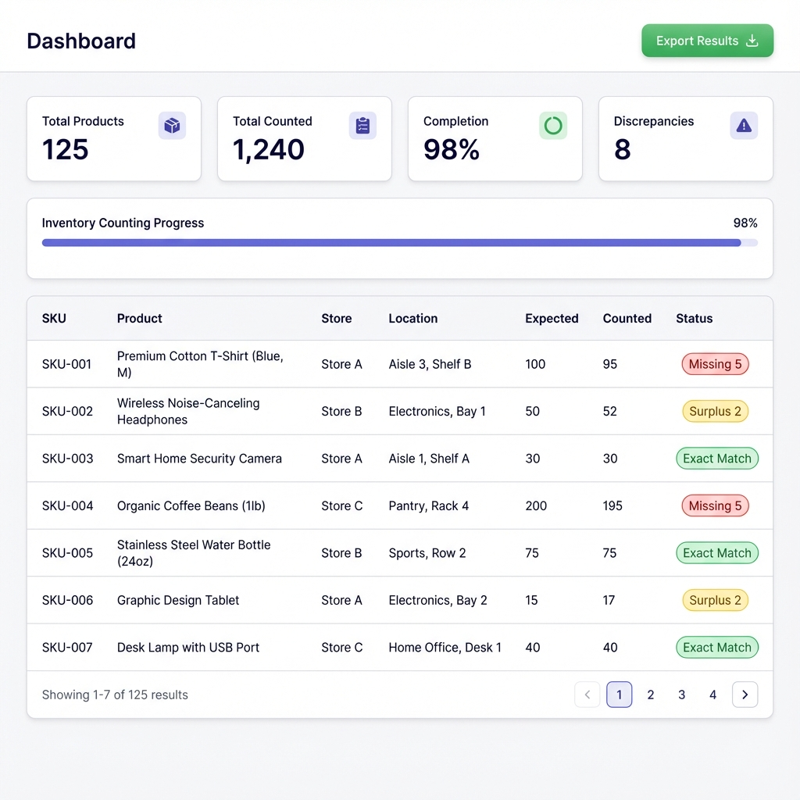
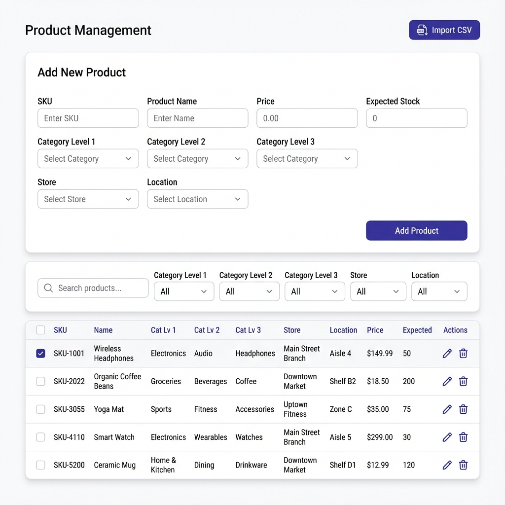
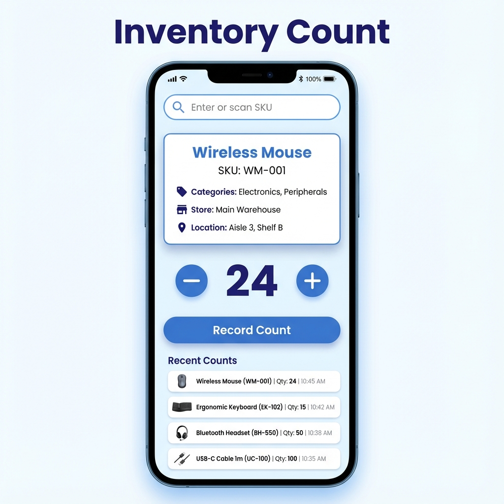

Getting Started
Welcome!
Welcome to the Physical Inventory Count application. This system helps you efficiently manage product inventory, conduct physical counts, and track discrepancies in real-time.
Logging In
- Navigate to the application URL
- Enter your email and password
- Click "Sign In"
First Time Setup
If you're setting up a new organization:
- Create an account using the Sign Up option
- Enter your organization details
- You'll be automatically logged in and can start adding products
Dashboard Overview
Key Metrics
The dashboard displays four important metrics at the top:
Total Products
The total number of unique products in your inventory system.
Total Counted
The sum of all inventory counts recorded during the current counting session.
Completion %
Percentage of expected stock that has been physically counted.
Discrepancies
Number of products where counted quantity doesn't match expected stock.
Progress Bar
The progress bar visually shows how much of your inventory has been counted. It fills from left to right as you complete more counts.
Inventory Status Table
The main table shows products with their counting status:
- Exact Match - Counted quantity matches expected stock
- Surplus X - You have more items than expected
- Missing X - You have fewer items than expected
Filters
Use the filters to view:
- Discrepancies Only - Show only products with counting differences
- All Items - Show all products regardless of status
- Store - Filter by specific store location
- Location - Filter by aisle, shelf, or room within a store
Export Results
Click the Export Results button to download a CSV file containing all products and their count data. This is useful for reporting and record-keeping.
Product Management
Adding Products Manually
To add a new product to your inventory:
- Navigate to the Products page
- Fill in the "Add New Product" form:
- SKU * (Required) - Unique product identifier
- Product Name * (Required) - Descriptive name
- Price - Unit price (optional)
- Expected Stock - How many you expect to have
- Category Level 1-3 - Organization categories
- Store - Which store or warehouse
- Location - Specific location within the store
- Click Add Product
Editing Products
To edit an existing product:
- Find the product in the list
- Click the Edit icon (pencil)
- Modify the fields inline
- Click the checkmark to save or X to cancel
Deleting Products
To delete a product:
- Click the Delete icon (trash can) next to the product
- Confirm the deletion in the popup dialog
Bulk Operations
You can perform actions on multiple products at once:
- Check the boxes next to products you want to modify
- Use the bulk action toolbar that appears:
- Delete Selected - Remove multiple products
- Edit Expected Stock - Set the same expected stock value for all selected items
Pagination
Use the pagination controls to:
- Change how many products display per page (25, 50, or 100)
- Navigate between pages using Previous/Next buttons
Inventory Counting
How to Count Inventory
The Count interface is optimized for quick, efficient counting:
Step 1: Find the Product
- Enter or scan the product SKU in the search field
- The product details will automatically load
- Review the product name, categories, store, and location to ensure it's correct
Step 2: Enter Quantity
Use the quantity controls to enter how many items you counted:
- Click + to increase by 1
- Click - to decrease by 1
- Or type the number directly into the field
Step 3: Record Count
- Click the Record Count button
- The count is saved to the database instantly
- The product card clears, ready for the next item
Recent Counts
The bottom section shows your recently recorded counts with timestamps. This helps you verify your work and catch any mistakes immediately.
Continue Count from Products
You can also navigate directly to counting from the Product List or Dashboard:
- Click the scanner icon next to any product
- You'll be taken to the Count page with that product already loaded
Filters & Search
Search Bar
The search function looks across multiple fields:
- SKU
- Product Name
- All category levels
- Store name
- Location
Just type in the search box and results filter in real-time.
Category Filters
The three category filter dropdowns work in a cascading manner:
- Select Category Level 1 - Level 2 options update
- Select Category Level 2 - Level 3 options update
- Select Category Level 3 - Final filtering applied
Store & Location Filters
These filters help you focus on specific areas:
- Store Filter - Select a store to see only products from that location
- Location Filter - When a store is selected, this shows only locations within that store
Clearing Filters
To clear filters, select "All" from any dropdown, or clear the search box.
Import & Export
Importing Products via CSV
Quickly add many products at once:
- Click the Import CSV button on the Products page
- Prepare your CSV file with these columns:
sku(required)name(required)categoryLevel1categoryLevel2categoryLevel3priceexpectedStockstorelocation
- Click Choose File and select your CSV
- Click Import Products
- Review the preview and confirm
Exporting Count Results
Export your inventory count data:
- Go to the Dashboard
- Click Export Results
- A CSV file downloads with all products, expected stock, counted quantities, and discrepancies
The exported file includes:
- All product information (SKU, name, categories, store, location)
- Expected stock levels
- Total counted quantities
- Variance (difference between expected and counted)
Tips & Best Practices
Organizing Your Inventory
Use Consistent Naming
When entering Store and Location information, use consistent names. For example, always use "Main Warehouse" not "Main", "Main Whs", etc. This makes filtering much easier.
Set Accurate Expected Stock
Before starting a count, ensure your expected stock values are up to date. This gives you meaningful discrepancy reports.
Use Categories Wisely
The three category levels let you organize products hierarchically. For example:
- Level 1: Department (Electronics, Clothing, etc.)
- Level 2: Category (Computers, Accessories, etc.)
- Level 3: Subcategory (Laptops, Mice, Keyboards, etc.)
Efficient Counting
Count by Location
Use the Store and Location filters on the Products page to print count sheets for specific areas. This makes physical counting more efficient.
Review Discrepancies Daily
Check the Dashboard's discrepancies filter daily. Recount items with large variances to catch errors early.
Export Regularly
Export your count results at the end of each day or counting session. This provides a backup and audit trail.
Mobile Usage
The app works great on mobile devices:
- Tables automatically convert to mobile-friendly card views
- The Count interface is optimized for touch with large buttons
- Use a Bluetooth barcode scanner for even faster counting
Troubleshooting
Can't Log In
Solution: Verify your email and password are correct. If you forgot your password, contact your administrator to reset it.
Products Not Appearing
Solution: Check if filters are applied. Clear all filters by selecting "All" in each dropdown and clearing the search box.
Count Not Saving
Solution: Check your internet connection. The app requires an active connection to save data. Refresh the page and try again.
CSV Import Failed
Solutions:
- Verify column names match exactly (case-sensitive)
- Ensure required fields (sku, name) have values
- Check for special characters that might cause parsing errors
- Make sure the file is saved as CSV, not Excel format
Need More Help?
Contact your system administrator or organization manager for additional support.